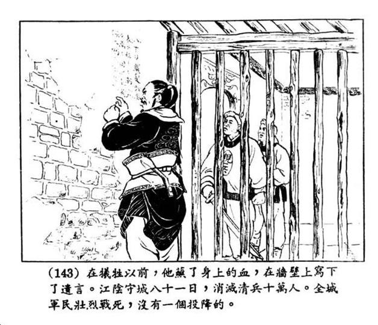
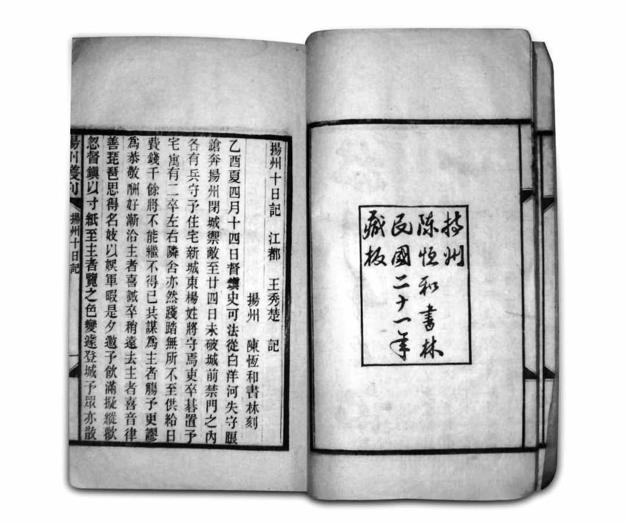

九
略早，常州府江阴县已发生更加可歌可泣的抵抗。
较之嘉定，江阴的不同在于，抵抗得到一定的组织。两位明朝低级别官员（典史）陈明遇、阎应元，先后担任领导者。一般民众，也较有秩序意识，许多问题事先有商议，议后能遵行。大家决定，“其老弱妇孺与不能同志者，宜速去”；转移老弱妇幼后，“城门尽闭”，逐一讨论守、战、不同队伍的服色与旗帜、联络外援等事项。决定启发官府库藏封条，将钱物用于抵抗运动；一旦发现不够，有个叫程壁的徽商立刻捐出三万五千两。这样，江阴得以比较迅速地进入军事状态，“分队伍，树旗帜，鸣金进止”，“集教场”、“填塞道路”、“分途出入”；加强警戒，防范奸细，“灯火彻夜，互为盘诘”，事实上也果然盘获了间谍，“命拘之狱”。[85]
江阴全民抗战的气氛，不特堪比嘉定，且尤有过之。“四乡居民不约而至者数十万计。三尺童子，皆以蹈白刃无憾。有不至此，共讦之。”[86]“咸以效死勿去为念。”[87]“各乡保乡兵距城五六十里者，日入城打仗，荷戈负粮，弃农不顾。不用命者互相攻讦，虽死无悔。”[88]“乡兵阵伍散乱，进退无节。然清兵所至，尽力攻杀，多有斩获；即不胜，亦未尝俯首效顺也。”[89]
自闰六月初一起事，这座仅由庄稼汉守卫的城池，清兵久不能下。
（守卫者）合乡兵二十余万人与在城民兵，分保而守。城门用大木塞断，派十人守一垛。卯时，喊“杀”一声；午时再派十人，喊“杀”一声；酉时，仍换前十人，随宿。夜半，再换后十人更番，周而复始。城下设十堞厂，日夕轮换，安息烧煮。公屋无用者，毁拆砖瓦，使瞽目人传递不停……井井有条，丝毫不乱。[90]
清将二都督大怒：“我得北京、得镇江、得南京，未尝惧怯，未尝费力；不要说江阴拳大的地方，就如此费力。”“二都督恃勇，衣三层甲，腰悬两刀，肩插两刃，手执只刀，独登云梯”，却被城上守民“群刺其面”，一汤姓童子，“持钩镰枪，用刀钩断其喉管”。[91]
僵持一个半月，七月中旬，满清以精锐王牌博洛贝勒（他也就是后在福建劝降郑成功之父郑芝龙的人），“悉统所部共几二十万来江阴”[92]。同时抵达的，还有大炮百门。杀鸡真正用上了牛刀。七月十九日，博洛发起攻击，炮轰整整一周，“炮声震天，闻二百里。一昼夜用火药万五千斤”[93]。城墙或裂或陷，几不能保，阎应元亦伤右臂。然每次进攻，却总被击退，城墙则迅速修复。守民极英勇，“一人立城上，头随弹去，而身僵立不仆；一人胸背俱穿，直立如故。”[94]“大雨；民立雨中受炮，毫无降意。”[95]
其间，恰逢八月十五中秋日。这惨烈的战场，居然出现辽远浪漫的一幕：
百姓携壶觞登陴，分曹快饮。许用（一诸生）仿楚歌，作五更转曲，令善讴者登高传唱，和以笙笛箫鼓。时天无纤翳，皓月当空，清露薄野，剑戟无声。黄弩师鼓胡琴于西城之敌楼，歌声悲壮，响彻云霄。外兵争前窃听，或怒骂、或悲叹，甚有泣下者。[96]
此情此景，堪为华族自古抗敌史上大美之图，留载史册。
不屈，直至八月二十日。这天，清军又从南京调来重炮二十四门，“较前更大，每舟止载一位”[97]，一发炮弹重达二十斤。二十一日，雨势甚急，清军发炮猛攻，城上守民见炮火闪亮，即避伏垣内，俟炮声停顿，复登城守御。不料，清军发现这种情况，加以利用，转放空炮，“烟漫障天，咫尺莫辨，守城者谓炮声霹雳，兵难遽入”，实际清兵却潜渡城河，从烟雾中蜂拥突上……江阴终于告陷！[98]

连环画《阎应元抗清》，张鹿山绘。
阎应元，江阴抗清起义领导者之一，时为江阴典史。在他与陈明遇领导下，江阴以一弹丸小城，抵抗满清王牌军二十四万，坚持八十一天，致清军丧三王十八将。

《扬州十日记》。
作者王秀楚，清兵扬州大屠杀见证者，以不逊于后世报告文学的纪实笔触，将亲身经历细录成文。
“阎应元坐东城敌楼，索笔题门曰：‘八十日带发效忠，表太祖十七朝人物；十万人同心死义，留大明三百里江山。’题讫，引千人上马格斗，杀无算。夺门西走，不得出，勒马巷战者八，背被箭者三。顾谓从者曰：‘为我谢百姓，吾报国事毕矣。’自拔短刀，刺胸血出。”[99]未死，次日被俘，杀于博洛贝勒前。
“陈明遇令闭衙举火，焚死男女大小共四十三人，自持刀至兵备道前下骑搏战，身负重创，握刀僵立倚壁上，不仆。”[100]
城陷，百姓“犹巷战不已，清兵用火攻败之。四民（即士、农、工、商）骈首就死，咸以先死为幸，无一人顺从者”。清兵“下令从东门出者不禁，又下令十三岁以下童子不杀”，然合城百姓拒为所诱，“男女老少赴水、蹈火、自刎、投环者不能悉记。内外城河、泮河、孙郎中池、玉带河、涌塔庵河、里教场河处处填满，叠尸数重”。[101]
八十天来，为对付这仅由老百姓守卫的弹丸小城，清军调集兵力二十多万，丧失三位王爷、十八位大将[102]；所折兵士，据许重熙《江阴城守记》：“清兵围城者二十四万，死者六万七千，巷战死者又七千，凡损卒七万五千有奇。”[103]以上仅为战死数，负伤者还未计于内。而他们的对手，不过是田间陌阡的农夫。这样一场城守奇迹，古往今来，未之闻也。
八月二十二日、二十三日，清兵大开杀戒，屠城两天（《明季南略》则说“清兵屠城凡三日，晨出杀人，暮则归营。”），“满城杀尽，然后封刀。”幸免者，仅躲在寺观塔上隐蔽处的五十三人而已。至此，前后八十一天，江阴人以“城内死者计九万七千余人，城外死者七万五千余人”[104]的代价，替明朝国人表示，中国“不至拱手献人”[105]。